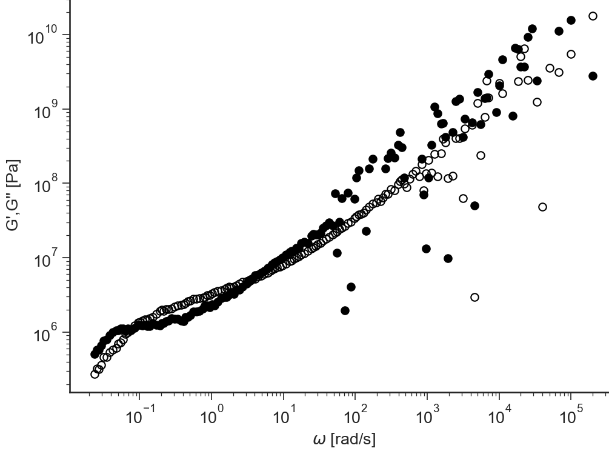
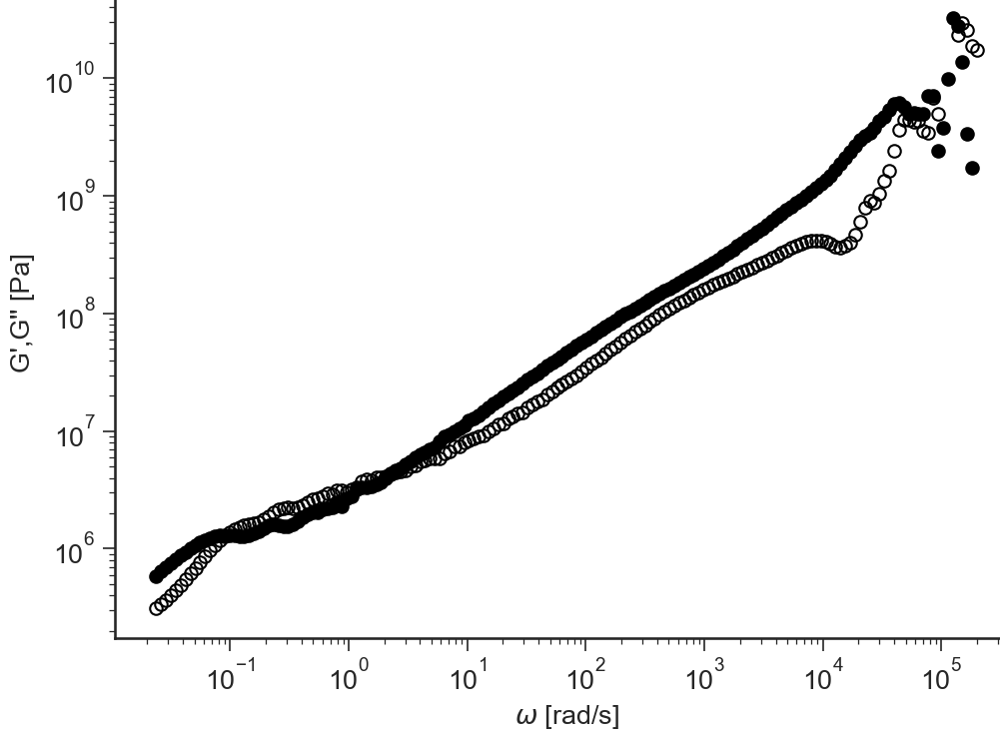

G(t): General description¶
Contents
Data Files¶
The first line of the file should contain the sample parameters separated by semi-colons (
;). It may contain any number of parameters which will be read and saved as file-parameter in RepTate.Then the data columns should appear, separated by spaces or tabs.
.gt extension¶
Text files with .gt extension should be organised as follows:
.gtfiles should provide at least parameter values forMolecular weight, \(M_w\)
Strain applied, \(\gamma\). If not present, the experimental data file is supposed to contain the relaxation modulus, not the stress, and the value of \(\gamma\) is assumed to be equal to 1.
2 columns separated by spaces or tabs containing respectively:
time, \(t\),
shear stress, \(\sigma_{xy}\),
A correct .gt file looks like:
Mw=224;gamma=1;
t sxy
0.0E+0 1.28146E+10
5.0E-6 1.13402E+10
1.0E-5 7.57171E+9
... ...
Views¶
log[G(t)]¶
-
BaseApplicationGt.viewLogGt()[source]¶ Logarithm of the relaxation modulus \(G(t)\) vs logarithm of time \(t\)
{kind=link}
G(t)¶
-
BaseApplicationGt.viewGt()[source]¶ Relaxation modulus \(G(t)\) vs time \(t\) (both in logarithmic scale)

Schwarzl G’,G’‘¶
-
BaseApplicationGt.viewSchwarzl_Gt()[source]¶ Schwarzl transformation: numerical calculation of the storage modulus \(G'(\omega)\) and loss modulus \(G''(\omega)\) from the relaxation modulus \(G(t)\)
The time range of the \(G(t)\) that will be used for the Fourier transformation can be selected by changing the values of the text boxes \(\log(t_{min})\) and \(\log(t_{min})\). For more details, check [1].
{kind=link}
i-Rheo G’,G’‘¶
-
BaseApplicationGt.viewiRheo()[source]¶ i-Rheo Fourier transformation of the relaxation modulus \(G(t)\) to obtain the storage modulus \(G'(\omega)\) and loss modulus \(G''(\omega)\) (no oversamplig).
The time range of the \(G(t)\) that will be used for the Fourier transformation can be selected by changing the values of the text boxes \(\log(t_{min})\) and \(\log(t_{min})\). For more details, check [2].
{kind=link}
i-Rheo-Over G’,G’‘¶
-
BaseApplicationGt.viewiRheoOver()[source]¶ i-Rheo Fourier transformation of the relaxation modulus \(G(t)\) to obtain the storage modulus \(G'(\omega)\) and loss modulus \(G''(\omega)\) (with user selected oversamplig).
The time range of the \(G(t)\) that will be used for the Fourier transformation can be selected by changing the values of the text boxes \(\log(t_{min})\) and \(\log(t_{min})\). For more details, check [2].

References
- 1
F. R. Schwarzl. Numerical calculation of storage and loss modulus from stress relaxation data for linear viscoelastic materials. Rheologica Acta, 10(2):165–173, jun 1971. doi:10.1007/bf02040437.
- 2(1,2)
Manlio Tassieri, Marco Laurati, Dan J. Curtis, Dietmar W. Auhl, Salvatore Coppola, Andrea Scalfati, Karl Hawkins, Phylip Rhodri Williams, and Jonathan M. Cooper. I-rheo: measuring the materials\textquotesingle linear viscoelastic properties \textquotedblleft in a step\textquotedblright ! Journal of Rheology, 60(4):649–660, jul 2016. doi:10.1122/1.4953443.